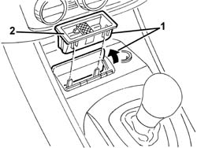

7065C42 ashtray (one) r+r
- Path
- Procedures > 70 FITTINGS > 7065 SEAT BELTS AND ACCESSORIES > 7065C accessories and decorations > 7065C42 ashtray (one) r+r
- Kind
- repair procedure (removal / refitting; the operation number is the code)
- Applies to
- all engines; all production periods
- Interactive page
- https://sloeber94.github.io/elrnDB-a147/en/#/3025934
Applies to: all engines; all production periods
 Removing
Removing
 Refitting
Refitting1. Open the ashtray cover.
2. Withdraw the ashtray.

Applies to: all engines; all production periods
Refitting
RemovingCheck that the ashtray is undamaged.
Fit ashtray in its seating.
Close the cover.